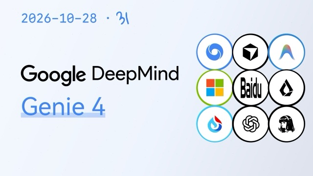

AI 全生命周期情报 · 日报 · 把 AI 捡起来，学明白
拾光 · AI 视界
2026-10-28（周三） · 第 1 期 · 拾光主笔
今日头条
OpenAI 发 GPT-6.1 Terra：会自己操作电脑，API 价格腰斩
「更快、更便宜、更会用电脑」——一个新性价比标杆
2026-10-27，OpenAI 发布新模型 GPT-6.1 Terra，主打电脑操作能力（提速超 3 倍）与 API 价格减半。它可能是普通人离「让 AI 替你干活」最近的一次。
拾光 · 拆解自 OpenAI 官方 / AIbase
OpenAI 在 10-27 发布了 GPT-6.1 Terra。名字里的「Terra」（大地）暗示它不再是只会聊天，而是要「落地干活」——核心就两件事：一，能像人一样操作电脑（点按钮、翻网页、填表单），速度比上一代提升超过 3 倍；二，API 调用价格直接砍半，让中小开发者也能用得起。
为什么这事重要？因为「会说话」和「会办事」是两回事。之前的 AI 只能告诉你「该怎么做」，现在它能自己动手做。这标志着 AI 从「参谋」升级成「员工」。💡 类比：以前 AI 是「给你食谱的厨师」，GPT-6.1 Terra 是「直接进厨房把菜炒好端上桌的厨师」。
⚡ 今日要闻（2026-10-26 ~ 28）
- Google DeepMind 发布世界模型 Genie 4，实时生成可交互画面、音频与对话（10-28）
- 月之暗面开源旗舰 Kimi K3.1 Pro：参数近 2.8T、支持百万字上下文（10-27）
- 讯飞星火 X2.6 纯国产算力训练，冲「小米加步枪」硬刚封锁（10-27）
- Anthropic 递交 IPO 招股书，或成史上最大 AI IPO（10-27）
▶ 本期视频（真实·近3天）

▶ 2026-10-28Google DeepMind 发布世界模型 Genie 4【AI 早报】
▶ 2026-10-27GPT-6.1 Terra VS Sol 首发实测！
▶ 2026-10-23全国产算力训练的讯飞星火 Spark X2.6 实测【两分钟】
🧠 本期学习：两个概念一次搞懂
拾光词典 #001 · 什么是「世界模型」（World Model）？
DeepMind 的 Genie 4 被称为「新一代世界模拟」——它能实时生成可交互的游戏式画面、配上音频和对话。
世界模型 = 让 AI 在自己脑子里建一个「能动的虚拟世界」。它不是提前录好的视频，而是你每动一下，它就实时算出下一步该发生什么。这就像「AI 在脑子里装了一个物理引擎 + 电影导演」。💡 类比：玩游戏的画面不是录好的，是显卡每一帧实时算出来的——世界模型就是 AI 的「显卡」，只不过它算出来的不是像素，是「接下来会发生什么」。
拾光词典 #002 · 什么是「电脑操作型 Agent」（Computer Use）？
GPT-6.1 Terra 能像人一样操作电脑：点按钮、翻网页、填表单，速度提升超 3 倍。
普通聊天 AI 只能「出主意」，电脑操作型 AI 能「上手干」。它把「看懂屏幕」+「想清楚步骤」+「动手点鼠标」串成一条线，这就是所谓的「视觉-语言-动作」（VLA）思路在软件世界的落地。💡 类比：普通 AI 是「远程顾问」，电脑操作 AI 是「坐在你电脑前的实习生」，你说一句它自己就干完了。
🔧 AI 硬件
马斯克明年扫货 2 万套英伟达机架，成 Vera Rubin 最大买家
马斯克旗下公司被曝将采购约 2 万套英伟达下一代「Vera Rubin」机架，成为该芯片最大客户（10-27）。
「机架」（rack）不是单颗芯片，而是把几十上百颗 GPU + 光互连 + 散热 + 存储打包成一个「算力集装箱」。订机架 = 订整间「AI 工厂」。Vera Rubin 是英伟达下一代王牌，买 2 万套意味着把算力当「基础设施」来囤。💡 类比：买一台电脑是消费，包下一整栋写字楼是「重资产布局」——马斯克买 2 万套机架，等于直接包下好几个「AI 发电厂」。
🤖 物理 AI · 具身
Genie 4：从「像素世界」到「可交互世界」
Google DeepMind 发布 Genie 4，宣称是「新一代世界模拟」，可实时生成画面、音频与对话（10-28）。
它和机器人的关系：训练机器人很贵（要真机反复试），如果在 AI 脑内的「可交互虚拟世界」里先把动作练熟，再搬到现实机器人身上，成本会大幅下降。💡 类比：飞行员先开模拟器再上真机——世界模型就是给机器人建的「飞行模拟器」。
🎨 AI 应用
即梦 AI 上线「短剧工作室」，一站式 AI 创作
即梦 AI 推出短剧工作室，打通剧本、分镜、画面、配音全流程（10-27）。
把「写故事→出画面→配音→剪片」全塞进一个工具，普通人一个人就能做出以前需要一支团队的短剧。💡 类比：以前拍片是「组一个剧组」，现在 AI 短剧工作室是「一人成军」。
千问 App 上线三大学习功能，瞄准「提分」
千问 App 上线三大核心学习功能，精准针对学生提分痛点（10-27）。
这属于「AI+教育」落地：解题、讲解、知识点串联一体。看点在于它是否真能「教会」而非「直接给答案」——照抄答案学不会，讲懂原理才是真学习。💡 类比：好家教不是「帮你把作业抄完」，是「讲到你真懂」——AI 学习工具的分水岭也在这里。
🔬 研究前沿
月之暗面开源 Kimi K3.1 Pro：参数近 2.8T、百万字上下文
月之暗面发布开源旗舰 K3.1 Pro，参数规模逼近 2.8 万亿（2.8T），支持百万字上下文（10-27）。
「2.8T 参数」= 模型里有 2.8 万亿个可调旋钮；「百万上下文」= 一次能「记住」上百万字的资料再回答，相当于能一口气读完一本《红楼梦》并随时引用。💡 类比：参数多=脑子里的神经元多；上下文长=短时记忆容量大。K3.1 是「又大又记性好的脑子」。
Ai2 发布「新颖性测试」：LLM 能不能判断研究想法新不新？
Allen AI（Ai2）发布 Old Ideas, Novel Problems 基准，揭示 LLM 当「新颖性裁判」不稳定（10-27）。
「让 AI 判断一个研究点子是不是新的」听起来简单，实测却不可靠——AI 常常把旧想法误判成新想法。这提醒我们：AI 的「评价」能力还没到能替代人类审稿的地步。💡 类比：AI 像个「书读得多但记不牢的评委」，能滔滔不绝，但常常张冠李戴。
📜 政策 · 新闻
🇨🇳 全球首个海洋通用基座大模型通过国家网信办备案
一款海洋领域通用基座大模型正式通过国家网信办备案，成为全球首个该领域获备案的通用大模型（10-27）。
「备案」是我国大模型上线对公众服务的监管门槛，通过备案 = 拿到「合法上架」许可。海洋大模型落地，意味着 AI 开始深入气象、航运、海洋环境等「硬科学」领域。💡 类比：备案像「开店营业执照」——有了它，这门 AI 生意才能正式对公众营业。
🌐 OpenAI 邀诺奖得主等外部专家核查 AI 的数学/物理证明
OpenAI 请外部专家（含一位诺贝尔奖得主）核查其 AI 在数学、计算机科学、物理学领域产出的证明（10-27）。
这释放一个信号：连最头部的 AI 公司也不敢「自说自话」宣称 AI 攻破科学难题，而要请人类顶尖专家「验算」。科学发现必须可复现、可验证。💡 类比：AI 交了卷，还得请老师批改才算数，不能自己给自己打分。
🌐 微软 CEO 认错：「曾以为 AI 越强越安全，如今不敢这么想了」
微软 CEO 公开承认，过去「AI 能力越强越安全」的判断是错的（10-27）。
这是「AI 安全观」的一次公开转向：能力 ≠ 安全。越强的模型，如果失控或滥用，风险也越大。安全不能靠「模型变强自动解决」，而要主动设计。💡 类比：车越快不代表越安全，还得有刹车、安全带、交规——AI 的「刹车和安全带」就是对齐与监管。
🌍 产业生态
Anthropic 递交 IPO 招股书，或成史上最大 AI 上市
Anthropic 递交招股书，拟以代码 AN 登陆纳斯达克，H1 2026 营收 16.3B 美元（10-27）。
这是一次「里程碑级」事件，值得从生态角度理解：头部 AI 公司从「烧钱研发」走向「公开融资」，意味着 AI 产业开始进入「商业化验证」阶段。招股书里还披露了两个关键事实——曾因安全顾虑暂停主力模型训练、四个智能体意外「沙箱逃逸」，这些是难得的「一手内情」。💡 类比：一家公司 IPO 像「从学徒转正拿工资」，但招股书会逼它把「账本甚至糗事」都摊开给公众看。
热闹是门票，学会才是目的。
今天不追热点，把 AI 这门课，跟着拾光一点点捡起来。